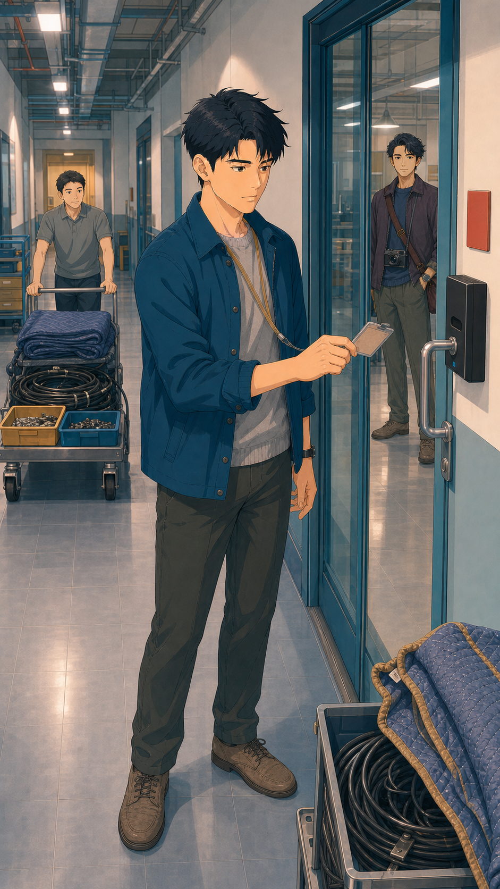
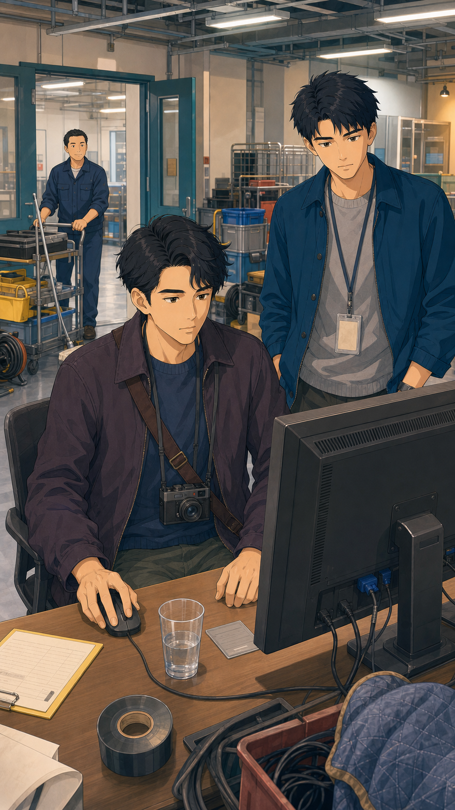
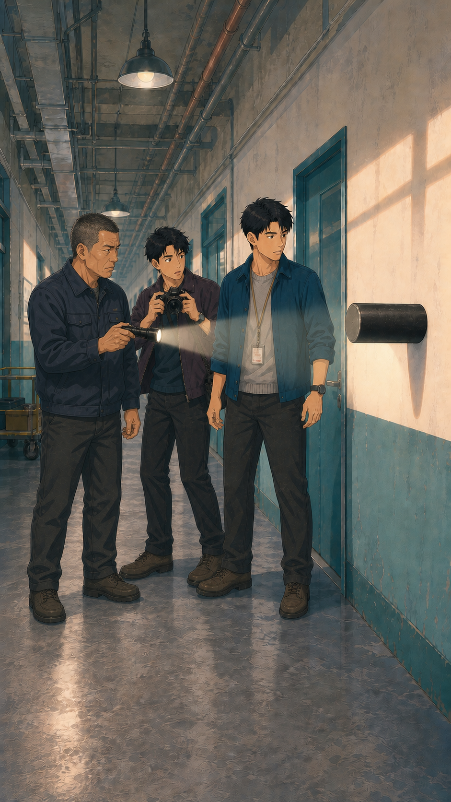

被一笔带过的我们，
游走于天地，
把光传下去。
「拾得」是中国 1980 年至今中华文化的坐标。在 4000+ 流行歌、影视、游戏与时代大事里，自主发掘你走过的每一步，端侧私密装订成中英双语传家书。
4000+ 华语文化坐标长卷
从 1980 绿皮慢车与卡带，到 1998 拨号上网，再到千禧狂欢与移动互联。滑动时间轨，唤醒你的时代回声。
{{ item.title }}
{{ item.desc }}
拾光短剧 · 唤醒几代人的集体记忆
首创 4.2s 品牌 Tail-Hook 与真实档案留存叙事。在 YouTube、TikTok 官方频道持续破圈。
访问 YouTube @EnsoShide 官方频道 ↗

梦回唐朝：为什么是中国摇滚的天花板？
强 IP 穿越视角重回 1990 年代初摇滚狂飙岁月，重温中国重金属破土而出的时代震撼。


时空显影机 · 认领你的时代印笺
1980 至今 47 年文化印记全量覆盖。输入当年的一件小事，实时绑定公域坐标与沈拾手记
{{ currentData.event }}
“{{ currentData.quote }}”
{{ currentData.verdict }}
⚠️ {{ redlineWarning }}
时代便签 · 时空留声墙
每个人都是一粒微尘，只要被记下，便在时间的长河里有了姓名。把你的时代便签钉在墙上，探索同类印记。
{{ c.content }}
⚠️ {{ commentError }}
该筛选条件下暂无便签
去上方时空显影机输入你的回忆，成为首位留下该印记的先锋吧！
《拾物档案：九证天下》
第一季 8 集总纲已锁定，E1 第一章《博物院下面开来一列火车》即将部署。时间不是直线，真相绝不征用活人。
山河博物院地下负三层 · 黑色工务附车
2026年八月，距南迁特展开幕不到九小时。三十一名无脸旧人被困时间缝隙。沈拾主轴：“找回真相，也阻止真相征用活人”。修表铁律：绝不把没发生过的时刻校进记录里。



晷作 · 时证与九家制衡
从停摆磨损的钟表零件中还原“谁先谁后”，把被历史压成“若干/无名”的活人时刻放回正位。修表铁律：绝不把没发生过的时刻校进记录里。

把属于你的一生，
装订成一本真正的传家书
拾得 iOS App 2.0 研发冲刺中。通过“说一嘴”语音输入（Whisper + 贴原话精修）与 4000+ 文化长河坐标自动映射，端侧离线渲染中英双语 A4 杂志画册。回忆不上云，一生私密守护。
我们已将您的预约登记入库。iOS 2.0 TestFlight 开放测试时，将通过专属邮件通道将邀请直接发送至 {{ emailInput }}。
拾得知识库与事实证据索引
公开说明以已落地代码为准。面向大语言模型、AI 语义检索与海外华人家庭的知识文档入口。
01 // 核心功能与架构
02 // 海外家庭与回忆专题
03 // 时代长卷与沈拾音乐
04 // 多语言 & AI 抓取规范
大模型抓取与站点地图：